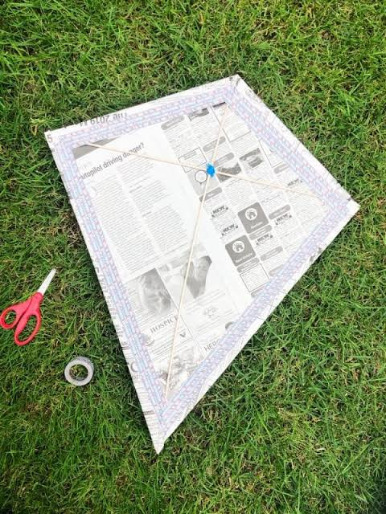

Welcome to Rohan's Kite Making Page!
Hello everyone! My name is Rohan, and I am a first-year student. My favourite hobby is building and flying traditional Indian kites (Patang).
Materials You Will Need
To make a good kite, you will need these simple items:
- Thin bamboo sticks (for the frame)
- Colorful kite paper
- Strong cotton thread (Saddi)
- Glue or tape
- Scissors
Step-by-Step Instructions
- Cut the bamboo sticks to the correct size: one straight stick for the spine and one curved stick for the bow.
- Tie the two sticks together in the shape of a cross using your thread.
- Cut the colorful paper into a diamond shape, making it slightly bigger than your bamboo frame.
- Fold the edges of the paper over the thread outlining the frame and glue them down tightly.
- Attach a small paper triangle at the bottom for the tail to help balance the kite in the wind!
My Favourite Kite
Here is a picture of a kite similar to the ones I build on my terrace:

Learn More
If you want to read more about the history of kites, click here to visit Wikipedia.
Watch a Kite Making Video
Here is a helpful YouTube video I found on how to make a paper kite at home: